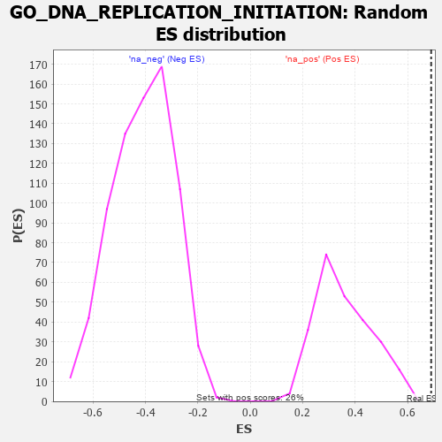

| | | Dataset | 7d |
| Phenotype | NoPhenotypeAvailable |
| Upregulated in class | na_pos |
| GeneSet | GO_DNA_REPLICATION_INITIATION |
| Enrichment Score (ES) | 0.6899171 |
| Normalized Enrichment Score (NES) | 1.9426941 |
| Nominal p-value | 0.0 |
| FDR q-value | 0.07362884 |
| FWER p-Value | 0.429 |
Table: GSEA Results Summary
 Fig 1: Enrichment plot: GO_DNA_REPLICATION_INITIATION
Fig 1: Enrichment plot: GO_DNA_REPLICATION_INITIATION
Profile of the Running ES Score & Positions of GeneSet Members on the Rank Ordered List
| PROBE | GENE SYMBOL | GENE_TITLE | RANK IN GENE LIST | RANK METRIC SCORE | RUNNING ES | CORE ENRICHMENT | | 1 | CDC45 | | | 239 | 0.950 | 0.0842 | Yes |
| 2 | NBN | | | 405 | 0.696 | 0.1471 | Yes |
| 3 | MCM10 | | | 427 | 0.673 | 0.2253 | Yes |
| 4 | ORC3 | | | 479 | 0.644 | 0.2963 | Yes |
| 5 | MCM2 | | | 546 | 0.614 | 0.3618 | Yes |
| 6 | ORC2 | | | 550 | 0.613 | 0.4351 | Yes |
| 7 | MCM7 | | | 612 | 0.591 | 0.4985 | Yes |
| 8 | CDC6 | | | 709 | 0.557 | 0.5534 | Yes |
| 9 | ORC5 | | | 1022 | 0.479 | 0.5717 | Yes |
| 10 | MCM3 | | | 1142 | 0.456 | 0.6115 | Yes |
| 11 | KAT7 | | | 1240 | 0.440 | 0.6522 | Yes |
| 12 | MCM6 | | | 1506 | 0.389 | 0.6657 | Yes |
| 13 | ORC1 | | | 1661 | 0.363 | 0.6899 | Yes |
| 14 | CDK2 | | | 2226 | 0.272 | 0.6517 | No |
| 15 | CDT1 | | | 2505 | 0.226 | 0.6438 | No |
| 16 | ORC4 | | | 3391 | 0.090 | 0.5434 | No |
| 17 | LRWD1 | | | 3582 | 0.063 | 0.5271 | No |
| 18 | PURA | | | 5032 | -0.205 | 0.3695 | No |
Table: GSEA details [plain text format]

Fig 2: GO_DNA_REPLICATION_INITIATION: Random ES distribution
Gene set null distribution of ES for GO_DNA_REPLICATION_INITIATION